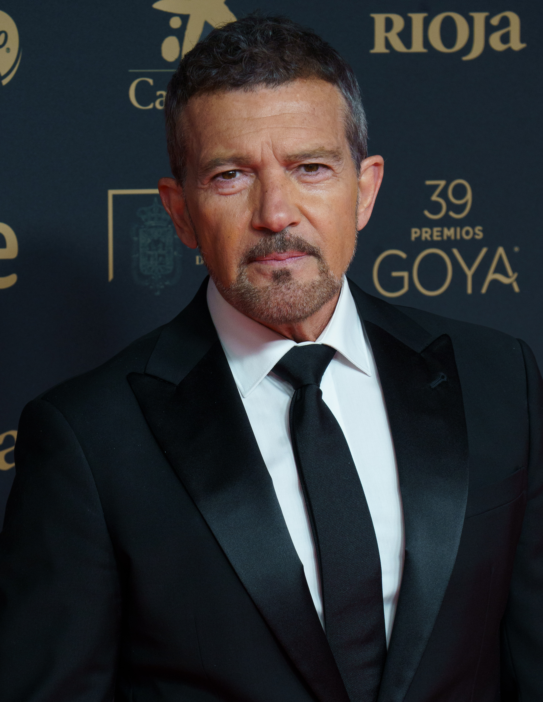
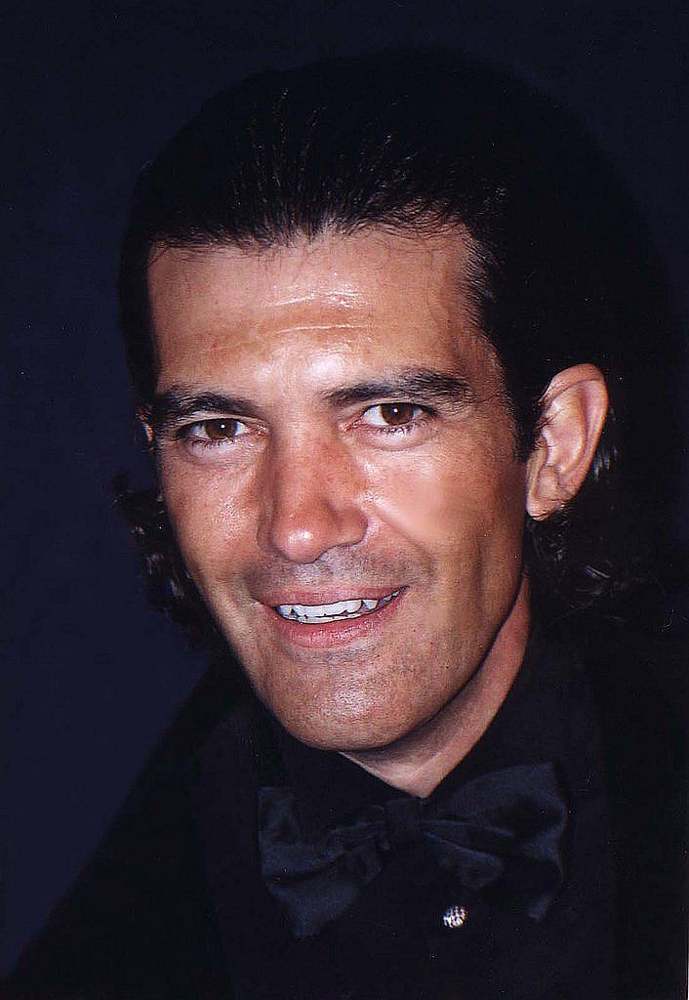

Antonio Banderas Biography: Age, Movies, Career, Awards & Family
He wanted to be a professional footballer until a broken foot at 15 ended that dream — then he walked into a small theatre in Málaga, caught the eye of Pedro Almodóvar, and became one of the most famous Spanish actors in the world. Antonio Banderas crossed from Spanish cinema to Hollywood without speaking English, played Zorro, voiced Puss in Boots, won Best Actor at Cannes for Pain and Glory, and at 66 is still taking on new work — from an Anthony Bourdain biopic to True Detective season 5. He is the third Spanish celebrity on Stars of Europe, after Penélope Cruz and Javier Bardem.

Key takeaways
- Born 10 August 1960 in Málaga; a broken foot at 15 ended his dream of professional football and pushed him toward theatre.
- Pedro Almodóvar launched him in Labyrinth of Passion (1982); they have made eight films together, from the 1980s to Pain and Glory (2019).
- Hollywood made him a star: Desperado, The Mask of Zorro, Philadelphia, Evita — and the voice of Puss in Boots since 2004.
- Pain and Glory (2019) won him Best Actor at Cannes and an Oscar nomination — he is only the second Spanish male actor ever nominated for Best Actor.
- Net worth is estimated at $45m–$60m. At 66 he is still working: Tony and Up Against It in 2026, then True Detective season 5, Cortés and Mare Nostrum.
Who Is Antonio Banderas?
| Full name | José Antonio Domínguez Bandera |
|---|---|
| Date of birth | 10 August 1960 |
| Age | 66 (as of November 2026) |
| Birthplace | Málaga, Andalusia, Spain |
| Nationality | Spanish |
| Profession | Actor, director, producer, theatre impresario |
| Years active | 1982–present |
| Known for | The Mask of Zorro, Desperado, Puss in Boots, Pain and Glory, Evita |
| Daughter | Stella del Carmen Banderas |
| Net worth | $45m–$60m (estimated range) |
Antonio Banderas is a Spanish actor, director, producer and theatre impresario whose career spans more than four decades, two languages and almost every genre — romantic drama, action, animation, musical theatre and art-house cinema. He is one of the few European actors who became a genuine Hollywood star without giving up his Spanish roots: he still lives part of the year in Málaga, runs his own theatre there, and returns to work with Pedro Almodóvar, the director who discovered him.
To most of the world he is Zorro, the swordsman of The Mask of Zorro (1998), or the voice of Puss in Boots, the swaggering cat of the Shrek films. To critics, his finest work is quieter: Salvador Mallo, the ageing film director of Pain and Glory (2019), a performance that won him Best Actor at Cannes and his first Academy Award nomination. Few actors have moved so easily between a summer blockbuster and a film about memory, regret and getting old.
Age and Early Life — Málaga to Madrid
José Antonio Domínguez Bandera was born on 10 August 1960 in Málaga, a port city on Spain's southern coast. His father, José Domínguez Prieto, was an officer in the Civil Guard; his mother, Ana Bandera Gallego, was a schoolteacher. He has a younger brother, Francisco. His stage name comes from his mother's surname, Bandera, with an "s" added at the end.
As a boy he dreamed of becoming a professional footballer. That dream ended when he broke his foot at 15. Around the same time he discovered theatre, and the injury that closed one door opened another. He studied at the School of Dramatic Art in Málaga and the ARA Theatre School, performed in local theatre and on the street, and eventually joined the Spanish National Theatre.
The turning point came in a small Málaga theatre, where Pedro Almodóvar saw him perform and offered him a film role. Banderas moved to Madrid, and within a few years he was one of the most recognisable young actors in Spanish cinema.
The Almodóvar Years (1982–1990)
Banderas made his film debut in Almodóvar's Labyrinth of Passion (1982). Over the rest of the decade he became a regular in the director's films: Matador (1986), Law of Desire (1987), Women on the Verge of a Nervous Breakdown (1988) — an international hit — and Tie Me Up! Tie Me Down! (1989), which earned him a Goya nomination for Best Actor and helped push him toward Hollywood.
These were not safe, conventional roles. Almodóvar's films of the 1980s were bold, funny and provocative, and Banderas played complicated, emotionally open characters — a kidnapper in love, a gay film director, a young man caught in other people's obsessions. The work made him famous in Spain and introduced him to international filmmakers, who saw an actor with leading-man looks and a willingness to take risks.
The partnership has lasted more than forty years — eight films in total, including The Skin I Live In (2011) and Pain and Glory (2019). No other director has shaped his career more.
Hollywood Breakthrough
In 1991, Madonna's documentary Truth or Dare helped introduce Banderas to Hollywood. He spoke very little English, and for his American debut, The Mambo Kings (1992), he learned his lines phonetically — and was praised by critics anyway.
What followed was a run of major films in just four years. In Philadelphia (1993) he played Miguel Álvarez, the partner of Tom Hanks's character, in the first big Hollywood film about AIDS. He worked with Meryl Streep and Glenn Close in The House of the Spirits (1993), and with Tom Cruise and Brad Pitt in Interview with the Vampire (1994), playing the vampire Armand. In Evita (1996) he played Che, the narrator, opposite Madonna — a performance that earned him his first Golden Globe nomination.

.jpg){kind=link}
Hollywood quickly tried to typecast him as the "Latin lover". Banderas spent much of the next decade proving he could do far more than that — action hero, comedian, villain, singer, voice actor — while never quite losing the accent that made him stand out.
Zorro, Spy Kids and the 1990s
Desperado (1995), directed by Robert Rodriguez, made him an action star. As El Mariachi, a mysterious guitar-carrying gunman, he began a long partnership with Rodriguez and co-star Salma Hayek that continued in Once Upon a Time in Mexico (2003). The same year he played a hitman opposite Sylvester Stallone in Assassins (1995).
Then came the role that defined him for a generation. In The Mask of Zorro (1998), with Anthony Hopkins and Catherine Zeta-Jones, Banderas played Alejandro Murrieta, a young outlaw trained by the original Zorro to fight injustice in Spanish California. The film was a worldwide hit and earned him another Golden Globe nomination. He returned as Zorro in The Legend of Zorro (2005).
He balanced the blockbusters with stranger choices: The 13th Warrior (1999), Original Sin (2001) with Angelina Jolie, Frida (2002) as the painter David Alfaro Siqueiros, and the first three Spy Kids films (2001–2003) as Gregorio Cortez, the father of the child spies. He also directed for the first time — Crazy in Alabama (1999), starring his then-wife Melanie Griffith, and El camino de los ingleses (Summer Rain, 2006).
Puss in Boots — The Voice That Crossed Generations
In 2004, Banderas voiced Puss in Boots in Shrek 2 — a small, sword-wielding cat with a huge ego, a soft heart and unforgettable wide eyes. The character became one of the most popular in the franchise, and Banderas's voice — warm, dramatic and funny — was a large part of the reason. He returned in Shrek the Third (2007) and Shrek Forever After (2010), and starred in the spin-offs Puss in Boots (2011) and Puss in Boots: The Last Wish (2022). He also voiced the character in Spanish in the main films.
The Last Wish was more than a children's sequel: it was praised as one of the best animated films of the year and earned an Academy Award nomination for Best Animated Feature. For Banderas, the role did something no live-action part had done — it introduced him to a whole new generation who had never seen Zorro or Desperado.
Pain and Glory — The Career Peak
In 2019, Banderas reunited with Almodóvar for Pain and Glory (Dolor y gloria), playing Salvador Mallo, an ageing film director looking back on his childhood, his loves, his addictions and his creative life. It was a quiet, deeply emotional performance — a long way from the action hero of the 1990s — and it became the most acclaimed work of his career.
The role won him Best Actor at the Cannes Film Festival on 25 May 2019, the Goya Award for Best Actor on 25 January 2020 (at a ceremony held in his home city of Málaga), the European Film Award for Best Actor, and the New York Film Critics Circle Award for Best Actor. Then came the Academy Award nomination for Best Actor — his first and only Oscar nomination. He lost to Joaquin Phoenix for Joker, but the nomination itself was historic: Banderas is only the second Spanish male actor ever nominated for Best Actor, after Javier Bardem, and the third Spanish acting nominee overall after Bardem and Penélope Cruz. No Spanish actor has ever won Best Actor — Bardem's Oscar was for Best Supporting Actor.
What made the performance special was how personal it felt. Mallo is a director in physical pain, unable to work, sorting through his past — and Banderas, who had suffered a heart attack two years earlier, played him with a stillness and honesty that surprised even his longtime fans. It was the role his whole career had been building toward.
Broadway and Television
Banderas has never been only a film actor. In 2003 he made his Broadway debut as Guido Contini in the musical revival of Nine, winning the Drama Desk Award and the Outer Critics Circle Award and earning a Tony nomination for Best Actor in a Musical. The same year he played the Mexican revolutionary Pancho Villa in the HBO film And Starring Pancho Villa as Himself, which brought him Emmy and Golden Globe nominations.
On television his most acclaimed role is Pablo Picasso in the National Geographic series Genius: Picasso (2018), which earned him Emmy, Golden Globe and Screen Actors Guild nominations. Across his career he has five Golden Globe nominations in total — for Evita, The Mask of Zorro, And Starring Pancho Villa as Himself, Genius and Pain and Glory — though he has never won one. He also has two Emmy nominations and one SAG nomination.
Spain has honoured him at home as well: the Honorary Goya in 2015 — presented by Almodóvar, and at 54 he was the youngest recipient in the award's history — the National Cinematography Award in 2017, and a star on the Hollywood Walk of Fame in 2005.
Theatre and Business in Málaga
Banderas has often said that theatre is what makes him happiest, and in Málaga he has put his money behind that belief. On 15 November 2019 he opened the Teatro del Soho CaixaBank, his own theatre in his home city — a centre for producing and presenting shows and for training young performers. He has directed Spanish-language productions there, including A Chorus Line (2019) and Company (2021), and Gypsy, which premiered on 17 October 2024 as the first staging of the musical in Spain. Since 2024 he has also backed the Sohrlin Andalucía School of Arts, a performing-arts school in Málaga.
Beyond the stage, he owns 50% of the Anta Banderas winery in Villalba de Duero, Burgos, and has worked with the beauty company Puig on a range of fragrances since 1997. He is a lifelong supporter of Málaga CF, and the University of Málaga gave him an honorary doctorate in 2010.
Recent Work and What's Next
Banderas has not slowed down. Recent films include The Laundromat (2019), Dolittle (2020), Official Competition (2021) — a satire opposite Penélope Cruz — Uncharted (2022) as the villain Santiago Moncada, Indiana Jones and the Dial of Destiny (2023), Journey to Bethlehem (2023) as King Herod, Paddington in Peru (2024) and Babygirl (2024) opposite Nicole Kidman.
In 2026 he has two new films: Tony, an A24 biopic of a 19-year-old Anthony Bourdain directed by Matt Johnson, in which Banderas plays the Chef; and Up Against It, a British romantic comedy directed by Trudie Styler, which premiered at the Toronto International Film Festival on 12 September 2026.
Three bigger projects are already announced. He will star as Hernán Cortés in Cortés, directed by Paul Mignot, announced in October 2026, with production already underway and release pencilled for 2027. He plays Captain Álvaro Salcedo in Mare Nostrum, directed by Mariano Cohn and Gastón Duprat, about a cargo-ship captain who rescues a boat of migrants in a storm — shooting in Spain from March 2027, with Banderas also an executive producer. And HBO has confirmed him as Rai García in True Detective season 5, opposite Nicolas Cage, with production beginning in 2027 — the first time Banderas and Cage will share a screen.
Net Worth 2026
Antonio Banderas's net worth is estimated at $45 million–$60 million. Celebrity Net Worth currently lists $60 million; older snapshots put the figure around $50 million, and one weaker tracker lists $45 million — so no single figure is given. No audited figure exists.
His fortune comes from more than forty years of leading film roles — including some of the highest-paid work of his career in the late 1990s and early 2000s — plus voice work in the Shrek franchise, his theatre in Málaga, the Anta Banderas winery and his long-running fragrance partnership with Puig. On our Top 10 Richest Celebrities page he would sit at #5, between Monica Bellucci and Marion Cotillard — the page is updated once this biography goes live.
Personal Life
Banderas was married to the Spanish actress Ana Leza from 1987 to 1996. He met the American actress Melanie Griffith in 1995 while filming Two Much, and they married in London on 14 May 1996. Their daughter, Stella del Carmen Banderas, was born on 24 September 1996. The couple announced their separation in June 2014 and the divorce was finalised in December 2015; they remain close friends, and Griffith's daughter Dakota Johnson has called Banderas a "bonus dad". Since November 2015 he has been with Nicole Kimpel.
On 26 January 2017, Banderas suffered a heart attack. He later had surgery to insert three stents, and has said the experience changed his life — he called it "one of the best things that ever happened in my life". He is an officer of a religious brotherhood in Málaga and travels home to take part in the city's Holy Week processions. As of 2016 he was living in Cobham, Surrey, England, while keeping close ties to Málaga.
Filmography Highlights
| Film | Year | Role |
|---|---|---|
| Labyrinth of Passion | 1982 | Sadec |
| Law of Desire | 1987 | Pablo Quintero |
| Women on the Verge of a Nervous Breakdown | 1988 | Carlos |
| Tie Me Up! Tie Me Down! | 1989 | Ricky |
| The Mambo Kings | 1992 | Nestor Castillo |
| Philadelphia | 1993 | Miguel Álvarez |
| Interview with the Vampire | 1994 | Armand |
| Desperado | 1995 | El Mariachi |
| Evita | 1996 | Ché |
| The Mask of Zorro | 1998 | Alejandro Murrieta / Zorro |
| Spy Kids | 2001 | Gregorio Cortez |
| Frida | 2002 | David Alfaro Siqueiros |
| Shrek 2 | 2004 | Puss in Boots (voice) |
| The Legend of Zorro | 2005 | Alejandro Murrieta / Zorro |
| The Skin I Live In | 2011 | Robert Ledgard |
| Puss in Boots | 2011 | Puss in Boots (voice) |
| Pain and Glory | 2019 | Salvador Mallo |
| Uncharted | 2022 | Santiago Moncada |
| Puss in Boots: The Last Wish | 2022 | Puss in Boots (voice) |
| Paddington in Peru | 2024 | Hunter Cabot |
| Babygirl | 2024 | Jacob |
FAQs
How old is Antonio Banderas?
Antonio Banderas was born on 10 August 1960, so he is 66 years old as of November 2026.
Where was Antonio Banderas born?
He was born in Málaga, Andalusia, in southern Spain.
What is Antonio Banderas famous for?
Most people know him as Zorro in The Mask of Zorro (1998), as El Mariachi in Desperado (1995), or as the voice of Puss in Boots in the Shrek films. His most acclaimed performance is Salvador Mallo in Pain and Glory (2019).
Did Antonio Banderas win an Oscar?
No. He was nominated for Best Actor for Pain and Glory at the 2020 Academy Awards but lost to Joaquin Phoenix for Joker. He did win Best Actor at Cannes for the same film. He is only the second Spanish male actor ever nominated for Best Actor, after Javier Bardem.
How many Golden Globe nominations does Antonio Banderas have?
Five — for Evita, The Mask of Zorro, And Starring Pancho Villa as Himself, Genius and Pain and Glory. He has never won a Golden Globe.
Who is Antonio Banderas's daughter?
His daughter is Stella del Carmen Banderas, born on 24 September 1996, from his marriage to the actress Melanie Griffith.
Is Antonio Banderas still acting?
Yes. In 2026 he has two new films, Tony and Up Against It, and three projects announced: True Detective season 5, Cortés and Mare Nostrum.
What is Antonio Banderas's net worth?
His net worth is estimated at $45 million–$60 million, based on the range published by celebrity-finance trackers. Different sites disagree — Celebrity Net Worth lists $60 million, older snapshots around $50 million — so no single figure is given. No audited figure exists.
What is the Teatro del Soho?
It is Antonio Banderas's own theatre in Málaga, opened on 15 November 2019. He produces and directs Spanish-language musicals there, including A Chorus Line, Company and Gypsy.
What was Antonio Banderas's first film?
Labyrinth of Passion (1982), directed by Pedro Almodóvar, who discovered him in a small theatre in Málaga.
Sources
Facts in this article were checked against: Wikipedia — Antonio Banderas (birth date and place, full name, family, broken foot at 15, stage-name origin, filmography, Almodóvar collaborations, Pain and Glory awards and Oscar nomination, Honorary Goya 2015, National Cinematography Award 2017, Walk of Fame star 2005, Broadway and television nominations, Teatro del Soho, heart attack 2017, personal life, years active 1982–present, age 66 as of 2026), Wikipedia — List of Spanish Academy Award winners and nominees (second Spanish male Best Actor nominee after Javier Bardem); Business Wire (Cortés announcement, 12 October 2026); Deadline and Screen Daily (Mare Nostrum, 5 November 2026; True Detective season 5, October 2026); TIFF and Screen Daily (Up Against It, 12 September 2026); A24 (Tony, August 2026); La Moncloa (National Cinematography Award 2017); Wikimedia Commons (hero photo: "Goyas 2025 - Antonio Banderas (cropped).jpg", Pedro J Pacheco, CC BY-SA 4.0; 1997 photo: "Antonio Banderas 3 (49491445488).jpg", John Mathew Smith, CC BY-SA 2.0). All writing is original to Stars of Europe. No thin biography blogs were used as sources.